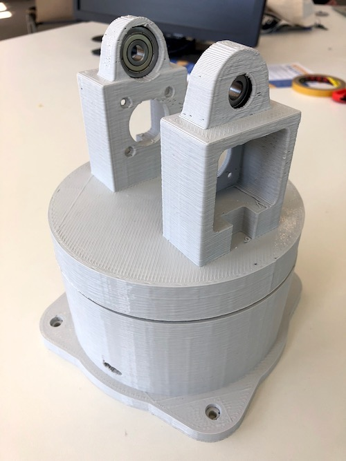
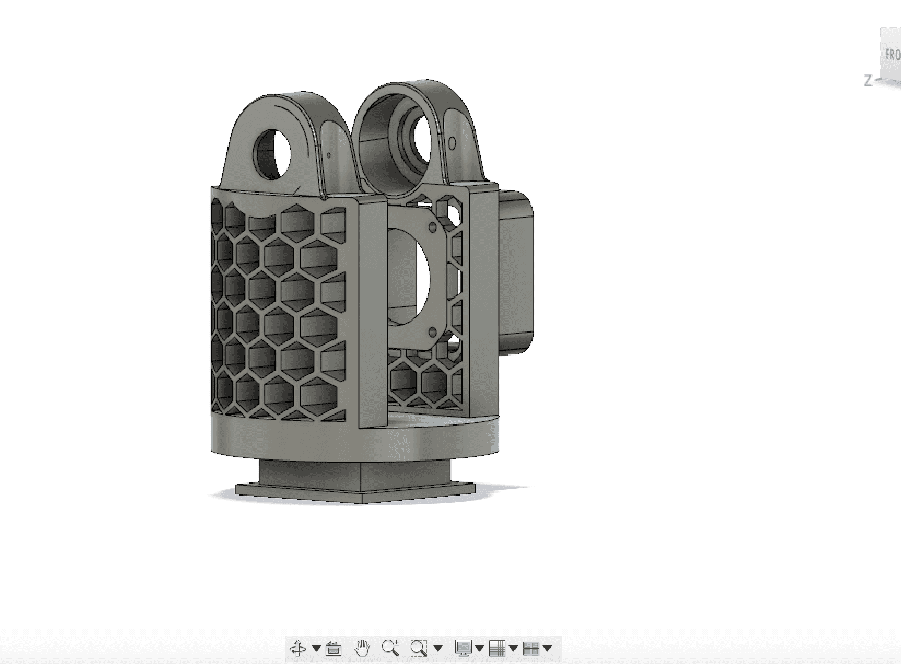

This weeks Assignment (part 1 of 2)
|
This weeks Assignment (part 2 of 2)
|
Learning outcomes
|
Have you?
|
This week's assigment was to design, build and actuate a machine that we built as a group.
After a very long brainstorming session, we decided to build a 3d printed robotic arm with 3 degrees of freedom.
I had the task to design the axis which could stretch and bend the parts of the robotic arm. We will have 3 parts in between and decided to have 2 movable axis + the grabbing hand

I used a design to go from a small gear (moved by two stepper motors) to a big one (which turns the first part of ther arm. |

In the middle of the big gears will be plugged in a ball bearing which can turn on the screw |

both houses on each sides are mounts for the stepper motors (Nema17) |

All parts in printed form+ mounted on the platform (printed in one part) |
|

The second axis works nearly the same BUT:in this case I went for a slightly less carrying weight design with a honey comb structurealso i only use one stepper here. |